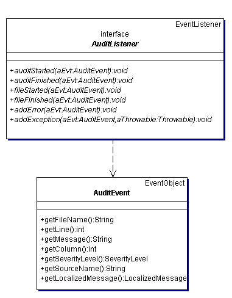

A Checkstyle listener monitors the progress of a Checker during the audit of files. The Checker notifies its attached listeners of significant events such as the start of the audit of a file and the logging of a Check error, and the listeners respond appropriately. Any number of listeners can be attached to a Checker. An audit always adds one of the distribution listeners, DefaultLogger or XMLLogger, to report events. A DefaultLogger produces simple text output for the events it receives, and a XMLLogger produces an XML document for its events.
Listeners DefaultLogger and XMLLogger are sufficient for most Checkstyle users, but you may find a need for a custom listener. For example, a user has requested verbose output of progress information during a Checkstyle run. Another user would like to filter error events. This document explains how to write listeners for such tasks and how to integrate them in a Checker module. It also describes two custom listeners that are inspired by ANT listeners: a listener that is a wrapper for the Jakarta Commons Logging API, and a listener that sends its results via email.
A listener is an implementation of the AuditListener interface. During an audit, a Checker informs its attached AuditListeners of six kinds of events: audit started/ended, file started/ended, and logging of an error/exception.
An audit passes an event to a listener as an AuditEvent. A file-related AuditEvent contains the name of that file. An AuditEvent for error logging has a message, a severity level, a message source such as the name of a Check, and file line and column numbers that may be relevant to the error. The notification of an exception to a AuditListener includes an error AuditEvent and the details of the exception. Here is a UML diagram for classes AuditListener and AuditEvent.
A custom listener is an implementation of the AuditListener interface. If the listener has properties that can be set from a configuration, the listener must extend AutomaticBean. An AutomaticBean uses JavaBean introspection to set JavaBean properties.
The custom listener that we demonstrate here is a verbose listener that simply prints each event notification to an output stream, and reports the number of errors per audited file and the total number of errors. The default output stream is System.out. In order to enable the specification of output to a file through property file, the class extends AutomaticBean and defines method setFile(String).
package com.mycompany.listeners;
import java.io.FileNotFoundException;
import java.io.FileOutputStream;
import java.io.OutputStream;
import java.io.PrintWriter;
import com.puppycrawl.tools.checkstyle.api.AuditEvent;
import com.puppycrawl.tools.checkstyle.api.AuditListener;
import com.puppycrawl.tools.checkstyle.api.AutomaticBean;
import com.puppycrawl.tools.checkstyle.api.SeverityLevel;
public class VerboseListener
extends AutomaticBean
implements AuditListener
{
private PrintWriter mWriter = new PrintWriter(System.out);
private boolean mCloseOut = false;
private int mTotalErrors;
private int mErrors;
public void setFile(String aFileName)
throws FileNotFoundException
{
final OutputStream out = new FileOutputStream(aFileName);
mWriter = new PrintWriter(out);
mCloseOut = true;
}
public void auditStarted(AuditEvent aEvt)
{
mTotalErrors = 0;
mWriter.println("Audit started.");
}
public void auditFinished(AuditEvent aEvt)
{
mWriter.println("Audit finished. Total errors: " + mTotalErrors);
mWriter.flush();
if (mCloseOut) {
mWriter.close();
}
}
public void fileStarted(AuditEvent aEvt)
{
mErrors = 0;
mWriter.println(
"Started checking file '" + aEvt.getFileName() + "'.");
}
public void fileFinished(AuditEvent aEvt)
{
mWriter.println("Finished checking file '" + aEvt.getFileName()
+ "'. Errors: " + mErrors);
}
public void addError(AuditEvent aEvt)
{
printEvent(aEvt);
if (SeverityLevel.ERROR.equals(aEvt.getSeverityLevel())) {
mErrors++;
mTotalErrors++;
}
}
public void addException(AuditEvent aEvt, Throwable aThrowable)
{
printEvent(aEvt);
aThrowable.printStackTrace(System.out);
mErrors++;
mTotalErrors++;
}
private void printEvent(AuditEvent aEvt)
{
mWriter.println("Logging error -"
+ " file: '" + aEvt.getFileName() + "'"
+ " line: " + aEvt.getLine()
+ " column: " + aEvt.getColumn()
+ " severity: " + aEvt.getSeverityLevel()
+ " message: " + aEvt.getMessage()
+ " source: " + aEvt.getSourceName());
}
}
A listener that filters error events could perform the filtering in methods addError and addException. As further examples of listeners, CommonsLoggingListener reports its events through the Commons Logging API, and MailLogger e-mails the audit report of a DefaultLogger.
To incorporate a custom listener in the set of listeners for a Checker, include a module element for the listener in the configuration file. For example, to configure a Checker so that it uses custom listener VerboseListener to print audit messages to a file named "audit.txt", include the following module in the configuration file:
<module name="com.mycompany.listeners.VerboseListener">
<property name="file" value="audit.txt"/>
</module>
Here is a truncated example of audit output from a VerboseListener:
Audit started.
Started checking file 'CommonsLoggingListener.java'.
Finished checking file 'CommonsLoggingListener.java'. Errors: 0
Started checking file 'MailLogger.java'.
Finished checking file 'MailLogger.java'. Errors: 0
Started checking file 'VerboseListener.java'.
Logging error - file: 'VerboseListener.java' line: 23 ...
Finished checking file 'VerboseListener.java'. Errors: 1
Audit finished. Total errors: 1
This section describes two examples based on ANT listeners. The first listener, CommonsLoggingListener, hands off events to the Apache Commons Logging facade and the second, MailLogger, sends a report of an audit via e-mail. The discussion of these examples and how to use them is derived from material in "Java Development with Ant" by Eric Hatcher and Steve Loughran, an excellent ANT book.
Apache Commons Logging provides a facade for logging tools log4j, J2SE 1.4, and others. Checkstyle listener CommonsLoggingListener responds to an AuditEvent by handing it off to the current Commons Logging Log.
The source code for CommonsLoggingListener. Notice that each AuditListener method that receives an AuditEvent calls a method for the Commons Logging log level corresponding to the Checkstyle SeverityLevel of the AuditEvent.
The easiest way to use CommonsLoggingListener is to include checkstyle-8.15-all.jar in the classpath because that jar file contains all the Commons Logging classes. The default Log under J2SE 1.4 is wrapper class Jdk14Logger. Under earlier Java versions, the default Log is a simple wrapper class, SimpleLog. Both default logging tools can be used directly from Commons Logging; if you need to use other tools such as log4j, then you must include the appropriate jar file(s) in the classpath.
Logging configuration details for Jakarta Commons Logging are in the documentation. As a simple example, assume that log4j.jar is in the classpath and the following log4j.properties file is in the current directory:
# Set root logger level to INFO and its only appender to A1.
log4j.rootLogger=INFO, A1
# A1 is set to be a ConsoleAppender.
log4j.appender.A1=org.apache.log4j.ConsoleAppender
# A1 uses PatternLayout.
log4j.appender.A1.layout=org.apache.log4j.PatternLayout
log4j.appender.A1.layout.ConversionPattern=%-5p %c %x- %m%n
Running a Checkstyle audit with a CommonsLoggingListener yields this (abbreviated) output:
INFO com.puppycrawl...Checker - Audit started.
INFO com.puppycrawl...Checker - File "CommonsLoggingListener.java" started.
INFO com.puppycrawl...Checker - File "CommonsLoggingListener.java" finished.
INFO com.puppycrawl...Checker - File "MailLogger.java" started.
INFO com.puppycrawl...Checker - File "MailLogger.java" finished.
INFO com.puppycrawl...Checker - File "VerboseListener.java" started.
ERROR com.puppycrawl...ParenPadCheck - Line: 23 Column: 28 ...
INFO com.puppycrawl...Checker - File "VerboseListener.java" finished.
INFO com.puppycrawl...Checker - Audit finished.
MailLogger sends an audit report in an email message. The listener uses a DefaultLogger to prepare the text of the message. The listener obtains other message parameters such as to and subject from environment properties that can be read from a properties file.
This implementation uses the JavaMail API as the mail system, and you must include appropriate jar files in the classpath.
As an example of using MailLogger, set system property -DMailLogger.properties.file=MailLogger.properties, so that MailLogger reads message parameters from file MailLogger.properties of the current directory:
MailLogger.from=user@example.org
MailLogger.failure.to=user@example.org
MailLogger.success.to=user@example.org
MailLogger.mailhost=localhost
That's probably our fault, and it means that we have to provide better documentation. Please do not hesitate to ask questions on the user mailing list, this will help us to improve this document. Please ask your questions as precisely as possible. We will not be able to answer questions like "I want to write a listener but I don't know how, can you help me?". Tell us what you are trying to do (the purpose of the listener), what you have understood so far, and what exactly you are getting stuck on.
We need your help to keep improving Checkstyle. Whenever you write a listener that you think is generally useful, please consider contributing it to the Checkstyle community and submit it for inclusion in the next release of Checkstyle.